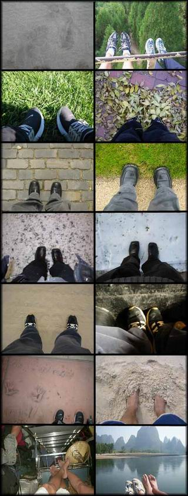
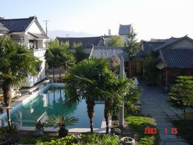
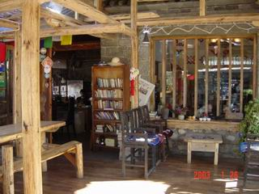
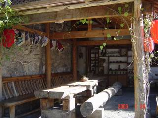
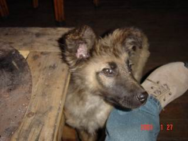
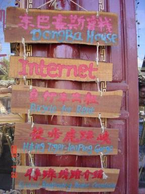
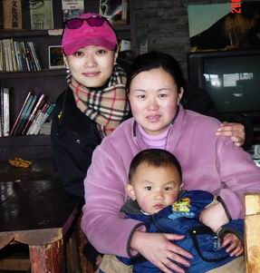

Archives : 2003-02
Hear Raymond’s voice @ Feb 28, 2003
今天收到Raymond的邮件,里面有他讲的一段话制成的MP3，如今上不了他的网站了，包括在Blogger网站上注册的朋友的网页也上不去,是否只是中国这里上不了呢？
Hi everyone! This is Raymond. I’m glad you can finally hear my voice. Thanks for all of your friendship and for your feedback over the last two years. I want to read this great story to you.
It’s called: “Most romantic couple wed for half a century.”
A man and wife who fell in love after she answered his mayday call when the plane he was flying developed engine trouble are celebrating after being named Britain’s most romantic couple.
Ted and Joy Cowling, who have been married for 58 years,beat hundreds of entries to the title.
Ted, 83, and Joy, 78, from Telford, Shropshire, met in 1945 when he was a flying instructor and she, a radio telephonist at Castle Combe,Wiltshire.
“It’s been a long marriage but we have stuck together and helped each other through,” said Ted.
“We are in love,” added Joy. “We’ve never fallen out of love. We still hold hands, even if it’s just to help each other stand up!”
电影《大腕》对白改编 @ Feb 28, 2003
一定得选最漂亮的女孩
特有气质的那种
泡就泡最骄傲最矜持的女孩
情书直接送到她手中
字数最少也得比资本论多八九倍
什么雀巢啊，德芙啊，梦特娇啊
能送的都给她送过去
早上递热牛奶，晚上奉鲜橙汁
包里还藏着一支玫瑰
带着水滴，倍儿精神的那种
每天堵着她
甭管她身边有人没人都得说：
“见君日短，思君日长”
一口地道的巴黎流氓腔
倍儿动人
她的生日再开个烛光晚宴
酒水用外卖的
光小费就得给百八十块
再作完全陶醉状
二十四小时都跟着她
就是一个字，爱
眨个眼都得看她几百回
来得人不是傍着马子就是跨着小蜜的
你要是带个同学来你都不好意思跟人家打招呼
你说这样的泡妞法
一年能泡多少个吧
我觉得怎么也得六七个吧
六七个！那是灾年
起码十二个，
你别嫌多，还不撞车
你得研究咱们的素质程度
真正博爱的
根本不在乎一月换一个
什么叫爱情杀手你知道吗？
爱情杀手就是泡什么妞都只泡最好的，不泡好泡的
所以我们泡妞的口号是：
不求好泡，但泡最好！
long way to go @ Feb 23, 2003
 Hank
Hank
《周渔的火车》 @ Feb 19, 2003
看完电影《周渔的火车》，只觉得女人是爱做梦的高级动物，所以她们总被那些梦纠缠得痛苦不堪。中午和一个好朋友吃饭，她笑着说：“你看没有男人我不是活得很快乐吗！女人痛苦都是因为那些男人...女人太喜欢做梦了。”
影片中的陈清为周渔写了首《仙湖》的诗（根据XIAN HU的发音），这首诗贯穿整部剧情。周渔是否因为迷恋上他的诗产生了爱情，一次又一次的赶火车呢？周渔更爱陈清，或者更爱他们之间的爱情，周渔痛苦的时候去寻找诗中的仙湖，另一个男人告诉周渔：“哪儿有什么仙湖啊？心中有就有，心中没有就什么都没有。”那个男人叫张强，剧本将张强在原先小说《周渔的喊叫》中出租车司机的职业换成了兽医。张强爱着周渔，他说要给她一个惊喜：一片真实的湖水，许多年轻人在湖边放着烟花，湖水沉浸在快乐的画面中。周渔还是走了，难过的离开那片快乐的湖水。看到这里，我那些许的感动为了张强！诗人陈清仅许给周渔一个有关爱情的梦和一片仙湖。兽医张强则带周渔去看一个真实的湖，正如张强许给周渔的一个实实在在的现实生活，那也是出于爱情。周渔是一个美丽善良的女性，她对陈青的那种无微不至的关爱和服从，使她觉得自己失去了独立的人格，爱情变成了一种负担。同样，作为女人的周渔也喜欢追梦，追逐梦中的仙湖和那个飘忽不定、虚弱而纤细的诗人。
影片结局：周渔死了。周渔终于没能赶上火车，她改乘的汽车在空中划出一个漂亮的图案，跌落水中。幸好周渔死了，不然爱情的故事如何继续？我们观众期望的究竟又是怎样一个结局呢？张爱玲在书中写到：爱情的最大幸福莫过于做平淡夫妻......
这部电影的导演想要表达的东西太多，故事的描述有点缺乏条理和逻辑。追逐陈清的女孩儿表达得也不是很清楚。总体感觉不如我想象中好。但是没什么关系，这并不影响我去看电影的心情。有些火车上的镜头还是很美的，给人很多可以想象的空间。周渔每周两次乘火车去和陈清约会，火车成了她幸福的等待。是否，爱情最美的就是期待的过程呢？

下面转载了“知鱼自乐”写的一段文字，有点意思。“周渔和李兰到底谁是真正的爱情。陈清死后一年，周渔嫁了一个美籍华人，出国了。李兰自杀了，她是手执电线电死的。与她们有关的别的人，都平凡地活着。”谁究竟是真正的爱情？
美丽而孤独的火车——北村《周渔的喊叫》
在现在，在人流中，你会瞥见一个匆匆而过的路人，也许，这个人心上有一份让人无法相信的爱情。如果你驻足，去观察这个人，你突然发现，她（他）不但具有一份让人无法相信的爱情，而且有两份这样的爱情。
这段话，是北村为他的小说《周渔的喊叫》所作的广告语。这篇小说写的是爱情，北村说，爱情其实是一种信仰问题。
拥有两份爱情的人叫陈清，是小城南明市的一个普普通通的电工，他和省城的女图书管理员周渔相爱，由此变成了童话里的白马王子，周围的人都承认，那是一场伟大的爱情，他们一见钟情，然后，难舍难分，见证这爱情的是火车，来来往往的火车，连接省城和小城的火车。陈清每星期两次坐火车去省城看周渔，他挣的钱都交给了铁路，不抽烟，不喝酒，一个月中，有半个月靠方便面度日，三年，他在火车上走过了6万里路，只为了和周渔那短短的相聚，他为周渔而活，为这爱情而活。
三年后，他有了个情人叫李兰，他还背着周渔抽烟，喝酒，并且，他不行了，在床上。
陈清在羞愧中度日，周渔是那么美丽纯洁而且有着深深创伤的女人，心中只有他和他的爱情，不允许一点渣滓，爱情曾经让他高尚起来，但高尚却让他疲惫不堪，为了继续做白马王子，他付出的代价是：真实。那一天陪周渔上街，街口广告牌下有一个醒目的女孩，他忍不住看了一眼，周渔问他为什么看，陈清说，她很性感。回到家，周渔开始流泪，她说，陈清你是不爱我的，否则你不会注意另一个女人是否性感，你觉得她性感，就是想和她做爱，你想和另一个女人做爱，你还敢说爱我？……
陈清无地自容，他流泪了。
但是李兰，她不在乎陈清有老婆，她觉得爱一个人自然会想和他在一起。陈清想抽烟，她就买烟，陈清想喝酒，她就买酒，那是一种卸去重负之后的彻底的自由，享受着自由的陈清有一天却忽然说，我不想抽烟了，也不想喝酒了，好像这不是幸福，也不是自由。他戒了，还戒了吹牛，戒了找女人。周渔让他激动而空虚，李兰让他平静而自由。
但是，陈清还是选择了周渔，他对李兰说，觉得两地跑的，更像爱情。然后，他死了，那是个雷雨之夜，电工陈清倒在配电房的积水之中，水中有裸露的电线，周渔目睹了他的死亡。李兰说，如果当时我在他身边，我也死了，我一定会上前把脚踩进水里，周渔怎么会站在那里不动呢，李兰睁着那双极深极黑的孩子般的大眼睛问。
陈清死后，周渔知道了李兰，在李兰家中，她看到了许多陈清的生活痕迹，尤其是照片，洗车，修电器，钓鱼，打球，煮菜，这是周渔陌生的生活。
在这里，北村把爱情变成了一种哲学，而作为读者，我也不能肯定，周渔和李兰到底谁是真正的爱情。陈清死后一年，周渔嫁了一个美籍华人，出国了。李兰自杀了，她是手执电线电死的。与她们有关的别的人，都平凡地活着。
这世间有一些事情是说不清楚的，即使人们大声喊叫也说不清楚，比如，爱情。
现在我总是想着火车，载满了陈清和周渔的爱情的火车在田野中穿行，长长的影子铺过河流，油菜花地，小树林，我还想起一首关于火车的诗：
要去哪里呢
美丽的火车
孤独的火车
凄苦是你汽笛的声音
令人想起了许多事情
Happy valentine’s day~~ @ Feb 15, 2003
情人节的早上无疑是快乐的，因为昨晚的聚会无比快乐，持续到今天还是快乐的！
春节后第四天的晚上，当我下了出租车快步走到金鹰楼下时，便不由自主地笑起来，那是我等待了四天、唯一的由衷地笑、发自内心的笑！那场景有点浪漫的喜剧色彩，可以想象我穿梭在车水马龙中，夜晚的霓虹灯闪烁在我布满血丝的眸子，越接近金鹰我的笑便一点点荡漾开来，那是朋友能带给我的喜悦！
四个人吃饭、聊天，说得我嗓子都哑了。除了我们这桌人之外，周围的人都是我们谈话的听众，有人干脆直接把脸朝着我们的方向聆听。JIAJIA讲美国人法国人和中国人的故事:
一个美国人、一个法国人和一个中国人遇难流落到一个荒岛上，三个人走啊走啊，拣到一个瓶子，打开瓶盖，里面冒出一股青烟，一个神灵对他们说：“为了感谢你们救了我，我可以满足你们每个人三个愿望。”
于是，美国人先说了：“第一个愿望是钱，第二个愿望是女人，第三个愿望是想回到我原先生活的地方。”接着美国人不见了。
法国人说：“第一个愿望是女人，第二个愿望是女人，第三个愿望是想回到我原先生活的地方。”接着法国人不见了。”
最后，中国人讲道：“第一个愿望是二锅头，第二个愿望还是二锅头，第三个愿望...我觉得和美国人、法国人相处的不错，希望您能把他们再变回来。”结果，美国人法国人又回到了那个荒岛上。
三个人继续往前走，又拣到一个瓶子，打开瓶盖，里面出来一个神灵，神灵说：“我是前面那个神灵的弟弟，你们救了我，我可以满足你们每个人两个愿望。
美国人和法国人想，上次让中国人最后许愿，这次让中国人先讲。中国人：“好吧，我先讲，第一个愿望是二锅头，第二个愿望...恩...没你什么事儿，你走吧！”
之后我们去南大答案酒吧喝酒，记不清上次去是什么时候了，SHERRY说她上大一的时候还在答案酒吧这个位置吃过馄炖。SHERRY和HANK玩“黑芝麻，汪汪、白芝麻，汪”的游戏，还有什么“两只小蜜蜂啊，飞到花丛中啊.......”今天在办公室我找同事练习“黑芝麻白芝麻”的游戏，以后不会被你们取笑我笨拙了。
Jiajia，你送我的照片我一定用相框放起来。在这里谢谢你了！要是可能，你那卷东郊雪景的胶片借我洗一下，有一些感觉不错，想自己保留。
Sherry,Hank,Jiajia我可不可以说“爱你们”？在情人节这天......
下班了 @ Feb 13, 2003
下班了，还在等辉宝鸡毛信的人来拿快件，办公室只剩下我一个人，怪冷清的。
收到WALLACE的E-MAIL，里面说野孩子的民谣比Suzanne Vega的好听很多，告诉一个网站，名叫花钱的年华，可以荡到野孩子的MP3。粗略地阅读了一些上面的内容，有点吸引力！WALLACE搞不清楚WEBMASTER是男还是女，我想应该是男的吧！其实性别根本不重要，就象聊天的时候，对方上来就问“你是男的还是女的？”......特没劲。
南京今天的最低温度是零下5度，春节后上班第三天，新年我怎么也看不出有什么新气象来？老妇女同事们还是那副对任何芝麻大的事情表现出极度关心和激动的模样，虚伪到骨子里的一群。第一天上班就开会，发给每个人一张表格，要求我们相互打分，一共三栏，每一栏100分，第一栏：工作能力；第二栏：工作精神；第三栏：工作实绩。和有的同事一年说不上10句话，各人干一摊子事儿，事实上相互了解得并不多。据说，有人居然给每个人每一栏都打了100分。有意思！
刚去云南那段儿我觉得自己变漂亮了，心情挺舒畅的缘故吧！每天也会刻意去点果汁喝。今早晨洗漱时想到老妈以前用家里电动榨汁机给我们做过豆浆，用五种豆子做的。要是每天能榨点胡萝卜汁做早餐多好啊！上班第二天接到NICK电话，十几年的朋友了，这种联系没有因为岁月漫长而断裂。小子结婚了，他老妈和我们以前的老班长得特像，说他父母还还在上海呢，不知道他的新家怎么样，去上海也不好意思去打搅他，毕竟是结婚了。HANK和JIAJIA都在准备出国读书的事，HANK的机票是2月14日的，签证还没拿到手，哎，做什么都难。我们同龄的几个人，在一个叉路口上要分开走了，有首歌中唱到：你走你的路，用我最深情的祝福，我也许将独自跳舞也许独自在街头漫步......（歌词没错吧？）无论如何，大家在新年里都走好！
哦，下班了！家是最温馨的地方，家能埋葬一切不悦，家能包容我所有好和不好的表现。我要回家了。
feet across the world @ Feb 12, 2003
POSTED BY “DAZED IN HONG KONG”
was pouring over my old pictures, and i realized i had a foot fetish. nothing sexual, although i’m sure once archived, this entry will bring in a lot of lost souls searching for exactly that. sorry, nothing kinky going on here.

clockwise from top: bali, beijing, chicago, versailles, chicago, la, malapascua, yangshuo, shenzhen, hollywood, venice beach, chicago, senlis, berkeley
more feet over at feet around the worldand don’s feet.
聆听Suzanne Vega @ Feb 11, 2003
He is not my friend,but he is with me
Like a shadow is with a foot that falls…....

在丽江古城买了刻录的CD 《The Best of Suzanne Vega》。Suzanne Vega自小入纽约表演艺术学校学舞蹈。年龄稍长，她喜欢读西尔维亚·普拉斯的内向的诗歌，听可罕和迪伦民谣时期的歌曲，并开始在纽约一些俱乐部演唱自己写的歌。随着维加与唱片公司签约，她很快树立起“80年代琼尼·米切尔”的形象。 维加最诱人的是那些描写现代都市女性的歌，操一把原声吉他，穿一件破旧皮上装，冷漠清静的表情透出内心的感情压抑、矛盾和空虚。
“别让冷漠的声音和无知的眼神愚弄你”, Jeremy Hellger 在为 New York Review 写 Suzanne Vega 的专辑 “99.9 F” 评论时如是说道，“Suzanne Vega 是一个机极富包容性的歌手，词曲作家。” Suzanne Vega 被认为是80年代民谣运动复兴的领军人物,那时她经常环抱着木吉它出没于 Greenwich 村的俱乐部，唱着那经由她自己改编的黑人布鲁斯歌曲及现代民谣歌曲。
这是张没有封套没有歌词的CD光盘，并不全明白她歌中所唱的是什么，那种轻声在她的歌里有一种很女性化的感觉，很细腻，很敏锐，也许还很琐碎，但也正是这种细腻而琐碎的东西串起了我们对生活的感觉。有人说：“在歌手里面，她显然低调而过时。象一张发黄的皱巴巴的纸。被信手撕下。一贯的慢不经心的抑郁腔调，和神经质的木吉它。她看过去自私而美丽......”
希望你喜欢我买的碟~~
I can feel his eyes when I do not expect him
阿夏-摩梭人 @ Feb 09, 2003
历史渊源
摩梭人在远古的时候，属于羌人部落之游牧者，在同自然界索取物质田间的漫漫岁月里，从黄河、赐支河、湟河三河之间的青海一带向南迁徙，最终定耕定牧在以泸沽湖为中心的云南宁蒗、丽江、兰坪、永胜、迪庆、四川的盐源、木里、盐边、冕宁等地。摩梭人有文字可考的历史，可追溯到西汉元锭六年（即公元前111年），至今已有两千多年。
阿夏,摩梭语意为情侣,又是对自己爱人的一种亲昵的称呼,是1990年以后在族内经过长时间探讨之后,才正式定下来的称谓,也是对外族人所谓”阿注婚姻”的否定,阿夏异居婚即男不娶女不嫁,男女双方终身在各自母亲家生产生活,双方除婚姻关系外,没有家庭经济关系,其子女随母抚养,住在女方家。
男女双方一旦确立阿夏关系,男阿夏在完成一天的的生活劳作后黄昏时分到女方家去夜宿.女阿夏则在自己的花楼中迎接他的到来。翌日清晨，男阿夏们陆续走出女阿夏家门，回到母亲家里，继续一天的生产生活。阿夏双方的感情一旦破裂，离异自由，所生子女随母，由母亲方独立承担抚养教育，无财产纠纷，一般说不会因为婚姻的破裂而产生敌意。阿夏异居婚的发展延续始终不受神权、族权、政治、经济和家庭阶层的制约和左右，要达到这种幸福美满的阿夏关系，是要经过“持久战”的。
双方在家庭中产生的矛盾、不愉、委屈，也只有在花楼中才会得到解脱和安慰，况且双方在一起的时间是短暂而宝贵的。不必要去为与花楼不相干的人和事烦恼和忧虑。阿夏双方在对方家里短留几日帮帮忙，也是人之常情，只是要在对方家中有诸如修房盖屋、婚丧农忙等大事的时候，这既表现女方贤惠知礼，也表现男方能干贤达。
阿夏婚姻从外表形式看有其松散的表征，但就其内子的联系而言，从道德观念、舆论准则、行为规范方面有其特有的约定俗成的章法，是一种不依靠法律维持，不取决于金钱关系，而是靠道德、靠舆论、靠阿夏双方的感情来决定的独特的婚姻关系。可以说它是一片人类最文明、最纯洁、最不被污染的感情圣地。
—转自《泸沽湖.摩梭人》
初三，在丽江的最后一天 @ Feb 08, 2003
初三是我在丽江的最后一天,上午10点多钟在古城里闲逛,来往的游客似乎没有前两天那么多.一家音像店播放的曲子吸引我走过去。丽江的CD（应该是盗版的吧？！）价格在15元/PC，另一种店里刻录的CD，黑白复印的封套，一张竟然是20元。坐在沙发上试听自己感兴趣的碟子，看见三个年轻男孩从店门前走过，其中的一个男孩在阳光下随着音乐翩翩起舞，我笑起来。几分钟后他们走进店里，朝我微笑，于是我们认识了。
在云南旅行的途中，我目睹也亲身体会了两个陌生人相识的场景。
1）一个美国人上了汽车，看见车厢内唯一一位和他一样金发碧眼的外国人，走到他身边的座位，边放行李边用英文说：“小孩子总是哭，哦...”于是那个外国人用英文接话说了起来，他们认识了；
2）“嗨，能帮我拍张照片吗？”一个戴眼镜的男人问道。“哦，当然可以。”由这个上海男人“王”我很幸运地认识了后来几天和我同吃同住的木木。一天之后，我和木木甩掉“王”去了泸沽湖。谁让他是上海男人呢？腻死了！
3）“吃口香糖吗？”“哦，好的。”两个座位靠在一起的陌生人交谈起来。
4）微笑！什么话都不说，仅是朝着你想认识的陌生人微笑。这种方式外国人使用的比较多。
最可笑而唐突地搭讪是走上前去，问道：“可以认识你吗？”愚蠢的搭讪，是吗？
三个年轻人来自法国，一个是阿拉伯人和法国人的混血儿，一个是越南人和法国人的混血儿，一个是法国人。均是24、25岁，我那么大的时候哪有钱到这么远的地方旅游？我这么自尊的人也不好意思使父母的钱。
晚上他们邀请我一起用餐，一起还有两个22、23岁的美国女孩和另一个30岁左右的法国人。其中一个美国女孩叫HONG（取自HONG KONG里的“HONG”），第一次来中国大陆，去年大学毕业。HONG自己出机票钱，她的朋友李云负担她在云南的费用。李云在西安一所大学任外教，她告诉我她的中国学生问她：“我怎么和我的异性朋友做爱？”CRAZY！真不知道这些中国的大学生问外国人这个问题是出于什么心理？李云回答他们：“我不是一个SEX老师，我是英语老师。”在我看来，现在的大学生比我们这个年龄段的人要观念开放，获取各种知识的途径远比我们那时侯要方便和快捷。他们在两性关系上也越来越不受道德约束。他们很知道怎么在多种关系中寻找平衡点，并自我感觉良好！
—[ ‘a:tist ]，Hong，[ ‘bili ]
那晚我们喝了不少啤酒，陌生人到相识，然后彼此告别。第二天各赴各的目的地。简单的生活，简单的人际关系，挺好！
有人说我是个不断需要新鲜事物的女人。我对这种说法没有异议。一个人避免麻木而去在意自己生活的状态，哪怕是无病呻吟！要我永远停留在80年代90年代，我不干。每个时代都有每个时代值得激动的地方。我们这个时代需要更多的敏锐，或者说需要更强烈的捕捉欲望，才能感受到这个时代带给我们的激情点。
纳西古乐、东巴文化 @ Feb 07, 2003
在丽江能演奏这种古乐的有好几个乐队,他们之间的竞争使得他们的演技不断提高.
在古城里最有名望历史最长的乐队是教大研纳西古乐队。该乐队已经得到好几个国家的邀请进行了出访表演。乐队由宣科先生率领，他能同时用中、英文进行极有才能的演讲。即使这种音乐不太适合您的口味，建议还是去体验一次。这个古乐队就在东大街，每天傍晚开始演奏。
演奏厅里充满了古老的氛围，主要原因有三：
1.他们所选用的有些曲子渊源于唐朝和宋朝，在其他地方极少听到，如：“清河老人”、“山坡羊”等。
2.很多技术高超的演奏者手中的乐器是具有好几百年历史的古董。
3.演奏者来自于不同的阶层：有教师、农民、鞋匠、马车夫等等。大都是年过七旬或者是八旬的老人。哦，要是在演奏过程中，听众能够有时间分享一下他们多经历过的生涯该多好啊！
如果不体味一次纳西古乐的表演，您的丽江之行将是不完整的。

东巴文化
古代纳西族有自己的宗教，称为“东巴教”。以东巴教为中心的一切文化活动，便是“东巴文化”，她包括宗教思想及其活动，为这些活动服务的绘画、雕塑等。最具价值的是一套古文字，被称之为世界上唯一存活至今的人类古文字，还有用这些古文字书写的数十万册古籍，这些古籍记录了整个纳西古代史。
MCA HOTEL @ Feb 06, 2003
MCA HOTEL是“全球旅行者”包括“中国旅行者”《指南》的酒店。酒店位于大理古城南门150米处文献路段，其庭院风格、自然、人文艺术的特点，是我们生活的温馨家园。
MCA HOTEL有各种特殊规格的房间，从RMB30元/间至RMB100-300元/间不等，还有为自助旅行者、学生提供的RMB10元/床位。
*swimming pool & beautiful garden
*24 hour hot shower
*free internet
*library
*satellite TV
*art studio,cafe,bar…
Tel:+86(0)872 2673666
Fax:+86())872 2671999
E-mail:mcahouse@hotmail.com
Add:云南古城大理古城文献路距南门150米 MCA HOTEL
post code:671003
—MCA提供的服务

—MCA HOTEL的标牌

—MCA庭院
—这是个连体的卫生间，除了隔音效果不好之外，其它功能都很健全

—这里是MCA聚会、喝酒、看书、上网、聊天、用餐的地方

—MCA休闲处

—这只狗狗是MCA的，很丑可是很酷哦！独立性强。我吹个口哨它就过来了，喜欢咬我的裤腿，和我玩得挺好，晚上用餐前，它躺在火塘边让我给它挠痒，小子，不要太舒服了！
DONGBA HOUSE INN @ Feb 06, 2003
DONGBA HOUSE INN/PHOTO CAFE
*high speed interent光纤网络
*public telephoneIP电话服务
*special backpacking routes consuleotion特殊旅游线路介绍
*nation culture caption consultation民族文化图文幻灯交流
Add:Jishan lane 16# Xinyi Street Old Town of Lijiang
地址：中国云南省丽江古城新义街积善巷16号
Tel:0888-5105431
E-mail:dongbahouse@hotmail.com

—HOUSE的前门

—东巴HOUSE提供的服务

—东巴HOUSE前厅，集上网、看书、聊天、CAFE等等功能为主
我和枣榴 @ Feb 06, 2003

云杉坪骑马。这匹马的名字叫“枣榴”，我边骑边用手抚摩它的脖子，边轻声呼唤“枣榴”，小子居然回头看我，FAINT，真是喜欢死它了。枣榴今年4岁，5岁的滇马才算是壮年，不过象我90多斤的体重对于它来讲是小CASE。枣榴的主人，不过30多岁，苗族。他告诉我他的太太才去世半个月，因为夫妻争吵之后自杀了。留下两个女儿，由她们的奶奶照看。有人试过用手去触摸马的鼻子和嘴吗？摸上去的感觉特别柔软，我喂苹果给枣榴吃，它先用嘴唇夹住苹果，我的手得往它的嘴里顶，然后枣榴用它那不多的牙齿咀嚼，挺有趣的！我的手上沾了许多枣榴的口水，干了之后闻上去有点香水的气味，有可能是苹果和口水的混合味。
元月30日夜于泸沽湖里格岛 @ Feb 03, 2003
下了一晚上的雨，早上9：30分乘车前往泸沽湖，雨雪下得很大，进了山区，汽车行的很慢。有些前往泸沽湖的汽车和游客走了半路便返回了。因为司机是里格人，车上的人都倾向继续我们的行程。虽然我很怕，但是也得合作才好，毕竟是个集体。好在路上的风景可以给心理一点补偿。下午15：30分左右从宁蒗县出发到泸沽湖，山区的海拔高度保持在2500到3300米之间，爬过一座山，另一座山却是春天般的蓝天和阳光，渐渐地又是雪地和阴天，这么交替着在傍晚18：20左右下榻在泸沽湖里格半岛第一家的“松纳扎西”家园。老板是个英俊的男人，面部轮廓明显，肤色黝黑。老板和他的小弟小妹经营着这个供游客吃住的家园。

—松纳扎西家园的小客厅内,晚上大家聚集在一起聊天烤火
晚饭后，老板带我们参加这里的篝火歌舞聚会，许多年轻男女聚集在院子的篝火旁，等待晚会的开始。仔细打量泸沽湖女孩子真的是很漂亮，尤其在篝火的印照下，面孔楚楚动人。这是一种代有表演兼赢利性质的晚会，进了院子的游客每人需交10元的费用。那些可爱的男孩女孩的歌声舞姿感染得人跃跃欲试。其间客人也加入到群舞中，节目到最后是摩梭人与客人对歌。他们一首我们一首，摩梭男孩点我单独演唱，可是我没有想到会被摩梭男人从后面架起来，往天上抛起…嗨，知道吗？被抛起的时候，我看见天上满天的繁星，就象钻石一样璀璨，别说我物欲哦，真的没有比钻石的光芒更能形容泸沽湖的星星了。并且那些星星离地面很近，有如梦幻之感！晚会以抛起我结束。有个摩梭男孩从我们身边走过时，炫耀地说：“我们晚上还要走婚去呢！你有没有抠哪个男孩子的手心啊？”“为什么要抠手心呢？”我问。“如果你抠了他的手心，他反抠你的话，你们就可以走婚了。”
在我看来，摩梭人走婚的传统很是人性化。汉族人用一张结婚证捆扎一对男女一辈子，当然离婚也是很人性化的，如果象摩梭人这样纯粹因为爱情而结合的走婚关系，似乎比汉族一夫一妻的婚姻更简单而自由。简单的爱情美且丰满，汉族的婚姻法淋漓尽致地发挥了爱情自私占有方面。摩梭人是否也会失恋呢？他们失恋的时候是否也会和汉族人一样痛苦和无助呢？
元月31日—泸沽湖落水村 @ Feb 03, 2003
元月31日我们同行的四人迁转到泸沽湖的落水村，准备在那里度过大年除夕夜。
这里有个小插曲，带我们到里格岛的司机将我们拉进松纳扎西家园，每晚每人20元，晚饭每人15元，后面的费用当然不太合理，店家烧好四菜一汤，不是我们点菜哦。那晚的菜实在是没有什么可吃的。我喝汤的时候看到一只死苍蝇躺在我的碗里...白天顶着大雪小心翼翼，长途跋涉10小时到达目的，吃到只苍蝇算什么呢？松纳扎西家园没有标准间，公用厕所，没有洗澡的地方。另外一对情侣换到隔壁一家客栈，松纳扎西的老板执意要他们支付当晚的住宿费。没过一会儿，就看那女孩子过来慌张地敲打这边的落地玻璃窗，要那帮从北京开车过来的男的去隔壁帮忙。我稳丝不动的继续在电脑上敲打着前一篇文字。知道一定是出事了。松纳扎西的老板鼻子和手上都是血的回来，据说是被隔壁的人咬了一口。那是男人们可以解决的事情，于我没有一点兴趣去弄清楚来龙去脉。第二天，我和木木背着背包去隔壁的客栈等那对情侣出发，才发现隔壁的客栈实在是好得不象样子（和松纳扎西相比），很浪漫的半墙玻璃窗，正对着泸沽湖，一张柔软温暖的双人大床，床单、被套和枕套雪白得让人充满扑上去跳两跳的欲望，不仅有公用的厕所还有公用的浴室。隔壁的店家还驱车送我们到落水村，每人只收了10元。如果乘猪糟船过去，一条船起码要120元，行程可能需要1小时以上。大年三十，找车子到落水村是件很困难的事情。
—摩梭女孩
车子停在泸沽湖下村的“女儿国风情楼”，这是村里人口最少的人家，长者我们称她为阿婆。这家客栈的厕所和浴室也是公用的，当天可以洗澡对我是莫大的幸福。两人一间，每人20元，所有床上用品全是雪白的，还有电热毯，赫赫~~~那是我所接触到的最地道的摩梭人家。家里一共6口人，阿婆、阿婆的两女一子，以及大女儿的两个女儿。除夕夜，阿婆的儿子去阿夏家了，剩下的全是家庭女成员，我们和这家人一起吃年夜饭，然后到指定的院子里参加摩梭人的歌舞篝火晚会，每位游客需缴纳10元。那个晚会上看见一个摩梭人的帅哥，那个摩梭男人酷酷的，跳舞时在领头的位置上。我只跳了5分钟，就跟800米长跑刚结束的感觉一样。
回到客栈，和木木看着泛白效果的电视画面，怎么都无法入睡。明天就是新年了，我还没能在远离南京的地方调整好自己的心态。窗外湖水荡漾着拍击石岸，声音美妙而动听，令人心都碎了！新年了，我们都要让自己快乐起来，最近几个月时常的失控究竟是怎么了？如果所有的错都能重来一次，结局是否会不同？无论如何，希望我们都快乐起来！
白天，发现落水村有间大狼吧，坐在泸沽湖畔大狼吧里听音乐，正好播放SADE的那首我最喜欢的《HANG ON TO YOUR LOVE》。店老板是广州来渌沽湖的游客，爱上落水村的大狼，一个比她小6岁
属虎的摩梭男人。他们有个即将4岁的儿子，名叫胡峻。这情形令人生出许多惆怅的对于爱人的憧憬，“HANG ON TO YOUR LOVE”，如何能抓住你的爱？想起过去，惟有轻轻在心里叹息！

~~-广州女人和她的儿子，这个胡女士原先在广州的工作是仪器分析员。
和胡峻拍了张照片，可爱的小家伙正拿着一本名为《求爱本能》的漫画册，煞有介事地翻阅着，中英文字。“《求爱本能》作者：草日。~~—这些‘非人’的漫画，线条虽然简单，但却充满感觉，表达直接而戏剧性强，将两性关系中的温馨、嫉妒、残酷、疑虑、紧张及欢乐活现纸上。”这么小的小人儿，便开始学习如何在爱情中作个聪明人了，让我这大把年纪还在为爱神伤的的人还活不活啊？
建议：里格岛根本不需要去，去泸沽湖直接去落水村就好。那里比里格可看可感受的方面要多得多。价格也很公道，更不用说为了生意打架了。落水村一共73户人家，无论家里人口多少，每家每天都出一人去牵马或划船，所有收入每家平分。象篝火晚会，也是每家出一人前往表演。
有关摩梭人的一些风俗习惯，待我日后有时间再做详细的介绍。
“女儿国风情楼”地址：
云南省丽江地区宁蒗县泸沽湖下村女儿国风情楼
电话：0888-5881108
邮编：674309
大年初一晚上回到丽江 @ Feb 03, 2003
车程7小时，因雪已经化了，缩短了3小时，可是如果路上长安小面包车的后车胎不爆的话，时间还可以缩短一个半小时。我们四个人包车，费用300元RMB。
回到丽江古城的第一件事，就是四处找住的客栈，我先前住的茶马客栈，标间80元/天，昨天的价格涨到180元，今天（2月2日）是300元，相同的房间哦！所以离开丽江即使你订房也没有可能。青年国际旅馆通铺，每人15元的也调整到30元。即使这样的价格也是客满的。木木和我好不容易找到一家有标间的，一间/150元，也只住了一个晚上，今天被赶到隔壁的普通房，所谓普通房即使用公用厕所和浴室，价格和昨晚标间的价格一样，150元/一间。那个标间的价格今天是350元了，赫赫~~~有人想到丽江开客栈吗？想也没有用了，在四方街附近的房子，要买下来也得1-2百万。听说这里的客栈和餐馆已经饱和，当地政府已停止新的店家注册开张。我们住的这家店名为“古城大石桥客栈”，那里特别好的是淋浴，烧的是锅炉，所以淋浴的水花挺大，舒服！
下午，和虎跳峡徒步回来的饭田泰云一起在古城里购物，他是关西学院大学书道部大四学生。我们都晒黑了，经常戴太阳镜，镜架的地方一条白色，而泰云眼镜镜片一圈是白色的，面部其他地方全是褐色的。在偏僻的小街花了180元买了5件很不错的木雕，两件写有东巴文字的体恤衫共40元。买了两条全毛的大披肩，花了210元。让我吐血的是在另一家店里，同样披肩开价是80元，而我买的那条花了170元。买过东西直接拿到邮局用快递包裹的方式寄回家，注意：寄件人地址一栏填写你自己的真实地址，如果投递有问题，包裹可退还寄件人的地址。木雕，不能保价，还得填写损坏自负。傍晚，泰云盛7点多钟的飞机前往西双版纳。木木明天早上8点的车去大理。我呢？继续留在丽江古城腐败！其实，我很想念南京，想念南京的人，想早点回去，又怕！泰云告诉我昨晚他们几个人在樱花屋喝酒，喝得醉了，不如今晚我也去喝酒，罢了罢了！